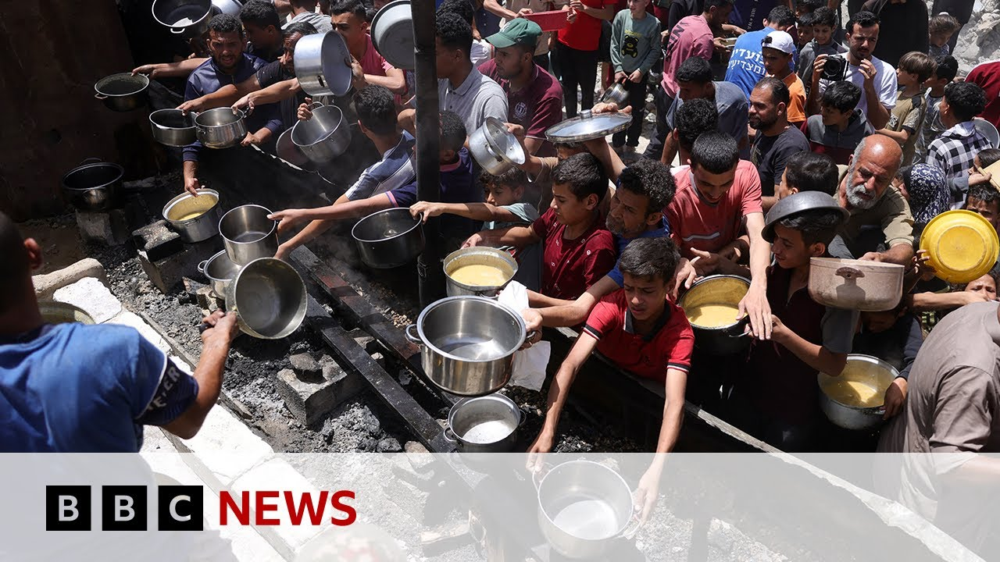

【加沙地带援助物资尚未分发，联合国称 | BBC新闻】
Summary: Despite aid entering Gaza two days ago, none has reached locals due to delays in Israeli military approval for distribution, while air strikes and evacuations continue amid international criticism.
摘要： 尽管两天前援助物资已进入加沙，但由于以色列军方迟迟未批准分发，物资尚未送达当地居民手中，与此同时空袭和疏散行动持续，引发国际社会批评。

⏱️ Estimated Reading Time: 7 min
Two days after aid began entering Gaza, the United Nations says that none of the supplies have yet reached local people.
联合国表示，援助物资进入加沙两天后，仍未送达当地居民手中。
And that is despite the easing of Israel's 11-week blockade.
尽管以色列已放松持续11周的封锁。
The UN says despite trucks reaching the Palestinian side of the Keram Shalom crossing, no aid has been distributed so far.
联合国称，尽管卡车已抵达凯雷姆沙洛姆过境点的巴勒斯坦一侧，但援助物资至今未分发。
They say they've been waiting for Israeli military permission to collect the supplies, but this has not been given.
他们表示一直在等待以色列军方批准接收物资，但尚未获准。
A BBC correspondent also says that lorry drivers have slept overnight in their vehicle cabins.
一名BBC记者还提到，卡车司机在驾驶室过夜。
93 trucks entered Gaza on Tuesday carrying aid, including flour, baby food, medical equipment, and pharmaceutical drugs.
周二有93辆卡车进入加沙，运送面粉、婴儿食品、医疗设备和药品等援助物资。
Well, meanwhile, Palestinian media are reporting that deadly air strikes have continued.
与此同时，巴勒斯坦媒体报道致命空袭仍在持续。
While the blockade of aid has drawn sharp condemnation from Western allies, the UK is pausing free trade negotiations with Israel and it announced sanctions on individuals and entities involved in the settler movement in the occupied West Bank.
援助封锁引发西方盟友强烈谴责，英国暂停与以色列的自由贸易谈判，并宣布对约旦河西岸定居点运动的个人和实体实施制裁。
And the European Union voted on Tuesday to review the block's ties with Israel.
欧盟周二投票决定重新评估与以色列的关系。
That measure backed by an overwhelming majority of member states.
该决议获得绝大多数成员国支持。
Well, Israel has condemned the EU's decision.
以色列谴责欧盟这一决定。
It accuses Brussels of completely misunderstanding the situation and providing encouragement to Hamas.
以方指责布鲁塞尔完全误解局势并为哈马斯提供鼓励。
Well, let's cross over live to our Middle East correspondent, Yolan Nell, who joins us from Jerusalem.
现在连线我们在耶路撒冷的中东记者约兰·内尔。
And I think Yolan, should we just start with where the aid is at the moment?
约兰，我们是否该从当前援助物资的位置说起？
Our understanding is it's crossed over into the Palestinian side of the KM Shalom crossing, but it is currently stuck there.
据我们了解，物资已越过凯雷姆沙洛姆过境点的巴勒斯坦侧，但目前滞留该处。
Do we know why?
知道原因吗？
Well, the system requires that once these lorry loads of aid have undergone um security checks, they just take them through Israel's main crossing um the KM Shalom crossing into Gaza.
该流程要求卡车载运的援助物资通过安全检查后，经以色列主要过境点凯雷姆沙洛姆进入加沙。
That aid is then offloaded and it requires lries um which are hired by the UN with local drivers inside the Gaza Strip to come and pick up that aid.
物资随后卸货，需由联合国雇用的加沙境内当地司机驾驶卡车前来接收。
Now, what we've been told is that those UN teams in Gaza waited for hours yesterday, but were not given the green light by the Israeli military to advance and access um those supplies, to take them off to warehouses and to those who really need them.
据悉，加沙的联合国团队昨日等待数小时，但以色列军方未批准其前进接触物资，未能将其运往仓库和急需者手中。
Um, we have been asking for updates this morning, but we've not heard anything yet um from either the UN or from the Israeli military or from the Israeli military body that controls the crossings to indicate what is going on.
今晨我们持续询问进展，但尚未收到联合国、以色列军方或过境点管控部门的任何回应。
Um, of course, you know, there are these big logistical and safety issues.
当然存在重大物流与安全问题。
The UN has been highlighting that about picking up the aid and distributing it at a time when Israel has been intensifying its military offensive in the Gaza Strip.
联合国强调，在以色列加强加沙军事攻势之际接收和分发援助面临困难。
from one of my colleagues who was at this crossing yesterday said that they did see, you know, heavy bombardment going on not far away from there.
昨日在该过境点的同事称，目睹不远处发生猛烈轰炸。
And this is this what is the Israeli army is describing as a large-scale offensive in Gaza.
这正是以色列军方所称的加沙大规模攻势。
So what are we expecting?
那么我们预期会怎样？
So, what we've continued to see is uh Israel bombing parts of the Gaza Strip um overnight um with more people killed across the strip um at least 20 of them according to the Hamas-run civil defense.
我们看到以色列持续轰炸加沙部分地区，夜间又有至少20人死亡（哈马斯管理的民防部门数据）。
Um, in particular, we have seen people fleeing in the past couple of days from Kanunas, which is not far from this KM Shalom crossing after the Israeli military issued evacuation orders telling people um to leave there and to head westwards towards the coast for their own safety.
特别是过去几天，以色列军方发布撤离令后，民众从凯雷姆沙洛姆过境点附近的卡努纳斯逃往西部海岸。
Um, there is this ground operation that is going on in both the north and the southern part of the strip.
以军地面行动正在加沙北部和南部展开。
when we had the Israeli military's chief of staff um saying yesterday, you know, this coming after all of the um international criticism that there had been basically indicating that um Israel's military course is not changing due to uh the external pressure that there's been and also some domestic criticism too.
以色列参谋长昨日表态，面对国际批评和国内压力，以军行动方针不会改变。
Um he said that the plan was to expand the maneuver in Gaza to destroy the terrorist infrastructure until Hamas is defeated.
他表示计划扩大加沙行动，摧毁恐怖基础设施直至击败哈马斯。
And just when it comes to the movement of these people, where are they being moved to?
这些撤离民众被转移至何处？
What kind of facilities are there?
当地有何种设施？
Is there even a humanitarian area now in Gaza given the destruction of the whole strip?
鉴于加沙全境遭毁，是否存在人道主义区域？
I mean, what we've seen in both uh the south of Gaza yesterday from the Kanunas area, people heading towards Al-Muasi.
昨日我们看到加沙南部卡努纳斯地区民众逃往阿尔-穆阿西。
was originally set up um among these sand dunes on the coast as what the Israeli military called a humanitarian zone.
该区域最初由以色列军方在海岸沙丘设立，称为"人道主义区"。
Although aid agencies have rejected that description.
但援助机构否认这一说法。
Um at the moment uh we're also seeing people who have headed from the western part and the north of from the eastern part and the north the guard strip westwards also going towards the coast.
目前还有从加沙西部、北部和东部向西海岸撤离的民众。
people setting up uh their tents along the beach, but there are very few facilities um in these areas.
人们在沙滩搭帐篷，但这些区域设施极其匮乏。
And this coming at a time where already um we're we're told that there are these severe shortages of food, of water in Gaza, of medicines as well.
此时加沙已面临严重的食物、水和药品短缺。
Um all of that desperately needed and still the struggle going on to get any aid into Gaza after 11 weeks of a total blockade was imposed by Israel.
这些物资亟需补给，而以色列实施全面封锁11周后，援助入加沙仍困难重重。
Yoland, as always, thank you very much for bringing us up to date.
约兰，感谢你带来的最新消息。
Uh Yoland now there joining us live from Jerusalem.
约兰在耶路撒冷为我们现场报道。